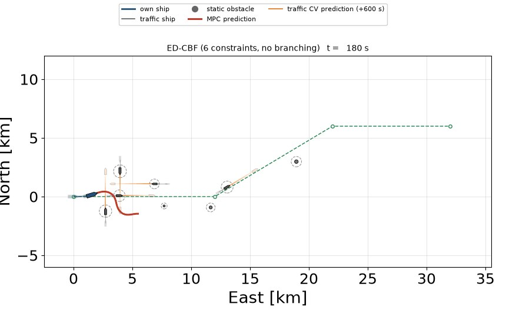
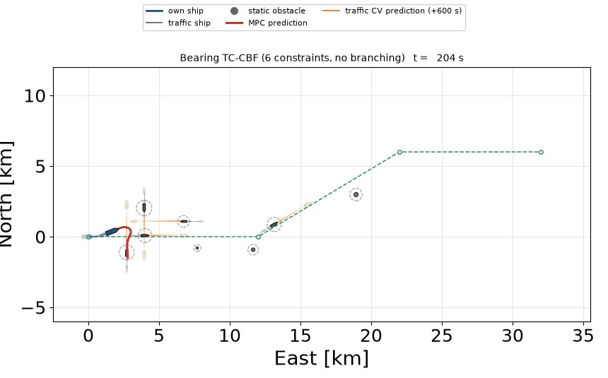
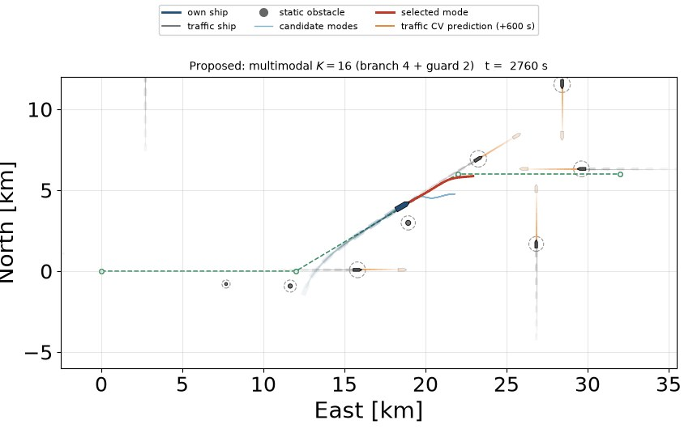
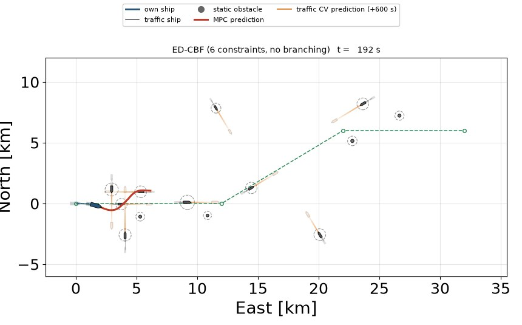
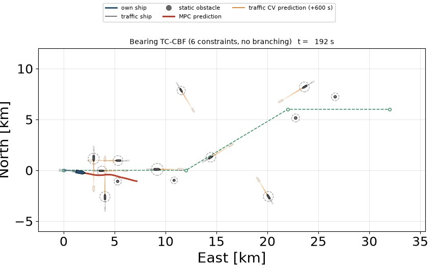
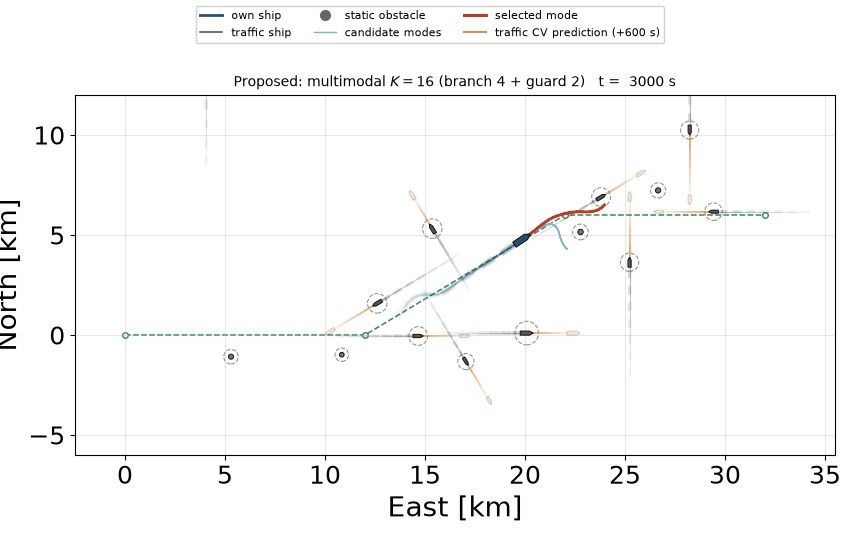
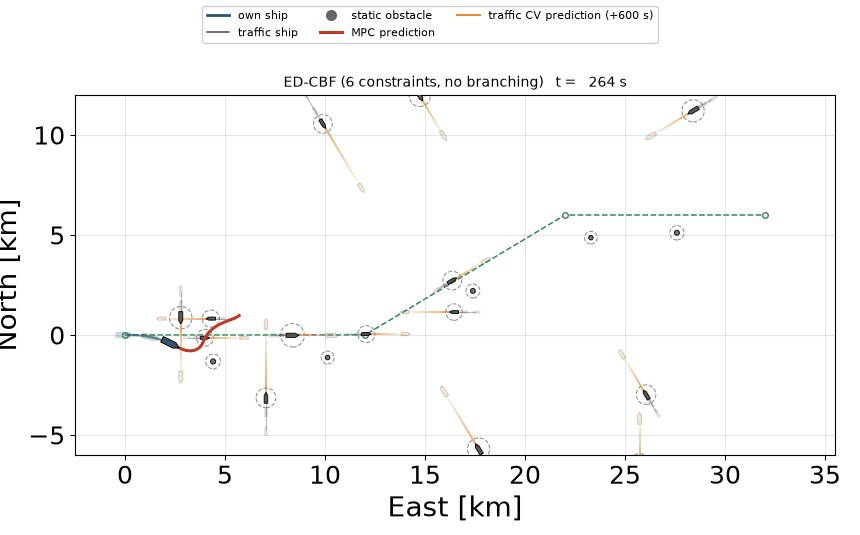
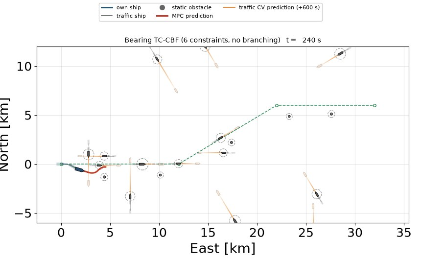

Three planners, identical traffic, three densities
Each row is one paired realization of the benchmark. All three planners face byte-identical traffic and perceive the same six nearest ships; the compared configurations differ only in how the avoidance side of each ship is determined. Playback is accelerated; the badge in the upper-left of each clip reports the measured per-period computation time.
Density 1 — 8 dynamic + 3 static obstacles
Baseline A — safety-zone breach at t = 297 s

Distance-based avoidance with no committed passing side. Stopped by the opening encounter group.
Baseline B — safety-zone breach at t = 341 s

Single committed passing side per ship. The commitment is invalidated and no alternative
remains.
Proposed — completes the route

Clears the same group and finishes in 4607 s, changing its committed avoidance route 8 times.
Worst-case clearance 60 m beyond the combined safety radius.
Density 2 — 12 dynamic + 4 static obstacles
Baseline A — safety-zone breach at t = 327 s

Same failure mode, one density level up.
Baseline B — safety-zone breach at t = 315 s

The prescribed side reverses as a ship crosses the bow line.
Proposed — completes the route

Finishes in 4996 s, changing its committed avoidance route 17 times. Worst-case clearance 82 m.
Density 3 — 16 dynamic + 5 static obstacles
Baseline A — safety-zone breach at t = 437 s

Densest level. The opening group is not resolvable without a committed side.
Baseline B — safety-zone breach at t = 406 s

A single committed side is not enough when several ships are decision-relevant at once.
Proposed — completes the route

Finishes in 4814 s under sustained congestion, changing its committed avoidance route 26 times.
Worst-case clearance 92 m.
Clips start automatically as they scroll into view.
How to read the clips.
- The heavy dark line is the executed trajectory of the own ship; ship glyphs are drawn with time-faded afterimages so the history of each encounter stays visible.
- Thin light lines, shown only for the proposed method, are the alternative trajectories held open at that instant. The one being executed is drawn in red.
- Dashed circles are the combined keep-out radii; a red cross marks the instant a safety zone is breached.
- The dashed polyline is the planned waypoint route, fixed and identical in every run.